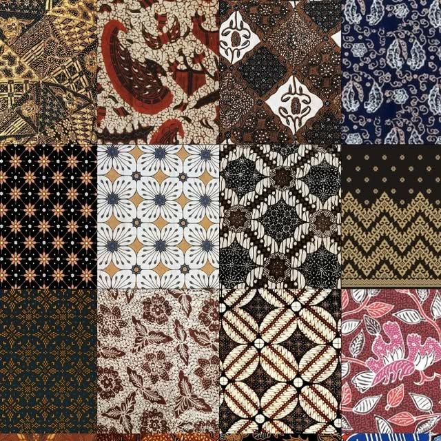
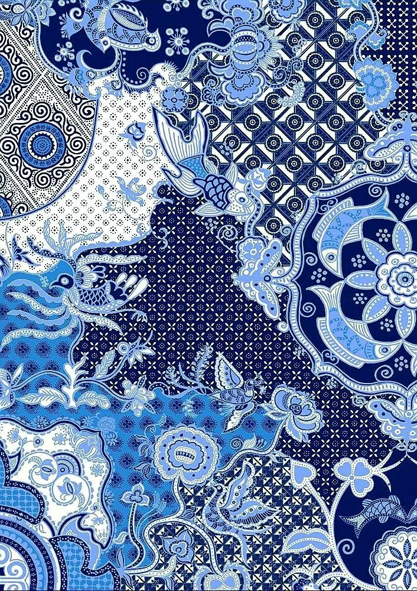
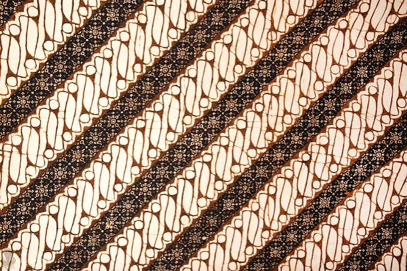
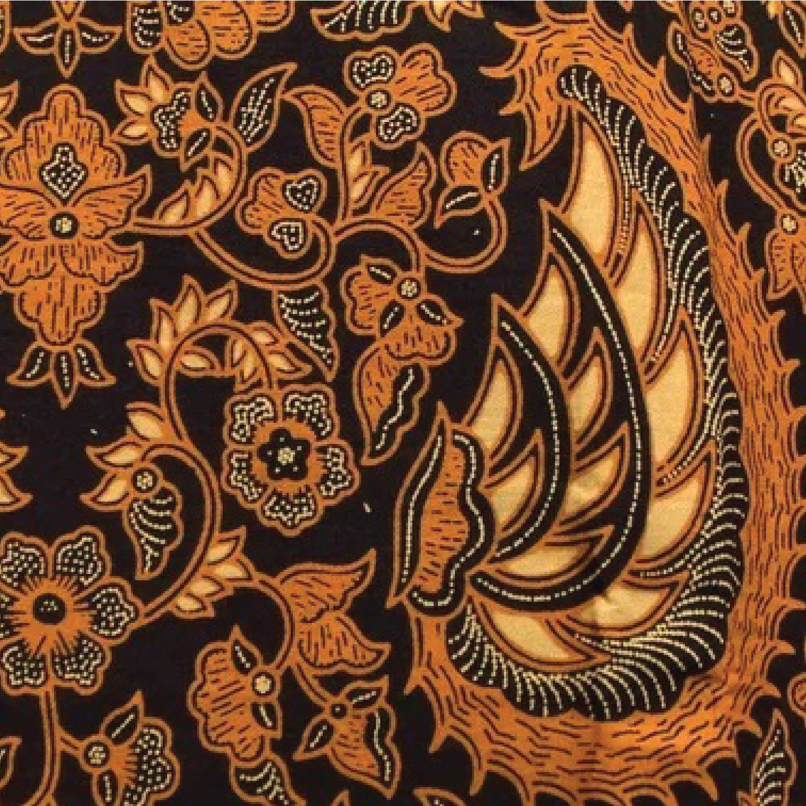
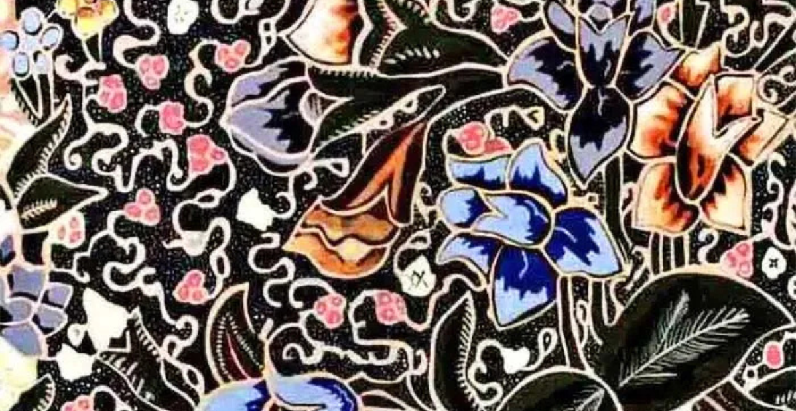
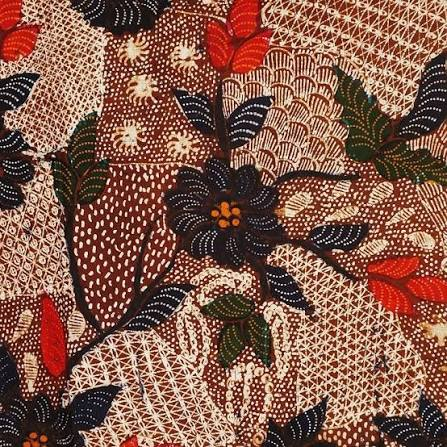

MENGENAL KEKAYAAN NUSANTARA
Mengenal batik sebagai salah satu warisan budaya Indonesia
Jelajahi BudayaWARISAN BUDAYA INDONESIA

Batik merupakan salah satu warisan budaya Indonesia yang memiliki nilai seni dan sejarah yang sangat beragam. Batik tidak hanya digunakan sebagai pakaian, tetapi juga menjadi bagian dari kehidupan masyarakat di berbagai daerah. Setiap daerah memiliki ciri khas batiknya sendiri, mulai dari motif, warna, hingga cara pembuatannya. Keberagaman tersebut menunjukkan bahwa Indonesia memiliki kekayaan budaya yang sangat luas dan menarik untuk dipelajari. Motif batik adalah corak atau pola yang menjadi kerangka gambar pada batik berupa perpaduan antara garis, bentuk dan isen menjadi satu kesatuan yang mewujudkan batik secara keseluruhan. Motif-motif batik itu antara lain adalah motif hewan, manusia, geometris, dan motif lain. Motif batik sering juga dipakai untuk menunjukkan status seseorang. Membatik merupakan tradisi turun-temurun. Karena itu, motif batik sering menjadi ciri khas dari batik yang diproduksi keluarga tertentu.
Batik dibuat dengan berbagai teknik, salah satunya adalah menggunakan malam untuk menutupi bagian tertentu pada kain sebelum diberi warna. Proses tersebut membutuhkan ketelitian, kesabaran, dan keterampilan dari pembuatnya. Motif yang terdapat pada kain batik juga dapat memiliki arti tertentu yang berkaitan dengan kehidupan masyarakat. Karena itu, batik bukan hanya sebuah kain dengan gambar yang indah, tetapi juga dapat menjadi cara untuk menyampaikan cerita dan nilai-nilai budaya dari suatu daerah.
Batik adalah hasil karya bangsa Indonesia yang merupakan perpaduan antara seni dan teknologi oleh leluhur bangsa Indonesia. Batik Indonesia dapat berkembang hingga sampai pada suatu tingkatan yang tak ada bandingannya baik dalam desain/motif maupun prosesnya. Corak ragam batik yang mengandung penuh makna dan filosofi akan terus digali dari berbagai adat istiadat maupun budaya yang berkembang di Indonesia. Motif Batik menurut Kamus Besar Bahasa Indonesia, motif adalah corak atau pola. Motif adalah suatu corak yang dibentuk sedemikian rupa hingga menghasilkan suatu bentuk yang beraneka ragam.
Keberadaan batik sampai sekarang tidak terlepas dari usaha masyarakat dalam menjaga dan mengembangkan kebudayaan. Batik dapat ditemukan dalam berbagai kegiatan, seperti acara keluarga, kegiatan sekolah, acara resmi, maupun kegiatan budaya. Penggunaan batik dalam kehidupan sehari-hari dapat menjadi salah satu cara sederhana untuk mengenal budaya sendiri. Selain itu, perkembangan zaman juga membuat batik semakin banyak dikembangkan dengan desain yang lebih beragam sehingga dapat digunakan oleh berbagai kalangan. Setiap daerah di Indonesia memiliki motif batik yang berkaitan dengan budaya setempat. Beberapa faktor yang mempengaruhi lahirnya motif-motif batik antara lain adalah letak geografis, misalnya di daerah pesisir akan menghasilkan batik dengan motif yang berhubungan dengan laut, begitu pula dengan yang tinggal di pegunungan akan terinspirasi oleh alam sekitarnya, sifat dan tata penghidupan daerah, kepercayaan dan adat di suatu daerah, serta keadaan alam sekitar termasuk flora dan fauna.
Sebagai generasi muda, kita memiliki peran dalam menjaga keberadaan budaya Indonesia. Hal tersebut dapat dimulai dengan mengenal budaya yang ada di sekitar kita, mencari tahu asal-usulnya, serta menghargai orang-orang yang masih mempertahankan budaya tersebut. Kita juga dapat menggunakan batik pada kesempatan tertentu dan memperkenalkan batik kepada orang lain. Dengan cara sederhana tersebut, budaya Indonesia dapat terus dikenal dan tidak mudah dilupakan.

SEDIKIT INFORMASI
Setiap daerah memiliki motif batik yang berbeda dan menjadi salah satu ciri khas daerah tersebut.
Motif batik dapat memiliki makna dan filosofi yang berkaitan dengan kehidupan masyarakat.
Batik merupakan salah satu budaya Indonesia yang perlu dikenal dan dilestarikan.
JELAJAHI KEKAYAAN NUSANTARA

Yogyakarta

Jawa Tengah

Jawa Tengah
Jawa Barat

Madura
Yogyakarta
Jawa Tengah
Jawa Tengah
Jawa Barat
Madura
MENJAGA WARISAN BUDAYA
Batik merupakan salah satu bagian dari kekayaan budaya Indonesia yang perlu kita jaga bersama. Sebagai generasi muda, kita dapat ikut melestarikannya dengan mengenal berbagai motif batik, menggunakan batik dalam kegiatan tertentu, dan menghargai para pengrajin yang masih mempertahankan budaya ini. Dengan mengenal dan menghargai batik, kita juga belajar untuk lebih menghargai keberagaman budaya yang dimiliki Indonesia.
✦
Mulai dari mengenal, menghargai, dan bangga terhadap budaya yang kita miliki.